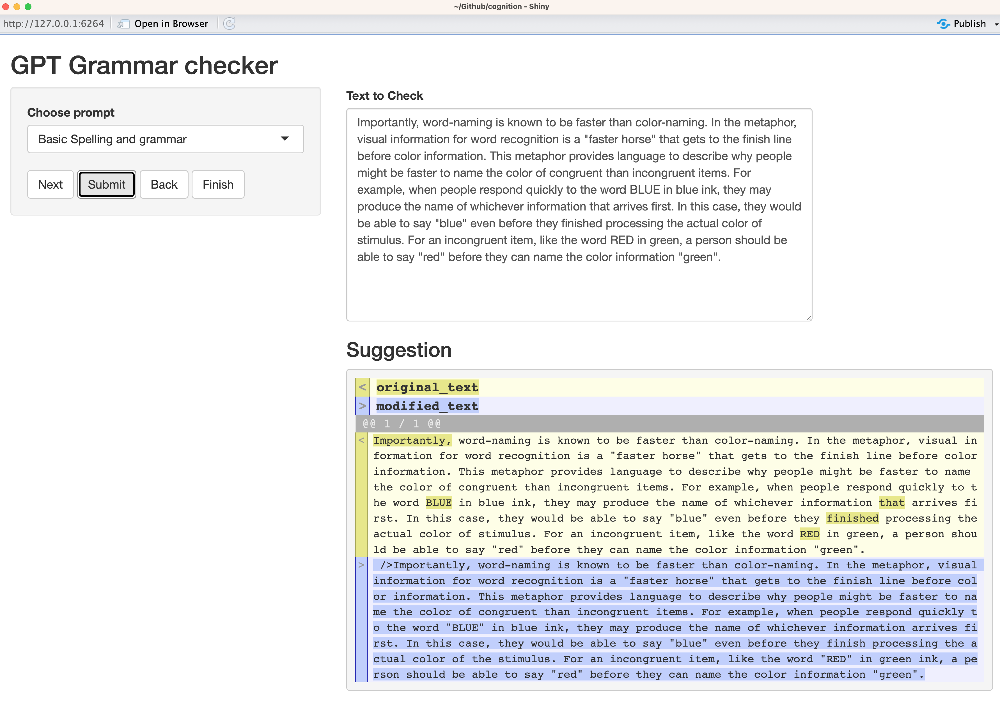

Scratchpad: Grammar checking Quarto documents with the OpenAI API
This is a scratchpad post. I would like better grammar checking for documents that I write in Rstudio, and I know that I could cobble something together using the OpenAI API. I’m using this post to do the cobbling, which may not result in a working solution. Fingers crossed.
Yesterday I copy-edited and lightly revised the first chapter in my intro to cognition textbook. Throughout the process I occasionally used the RStudio addins I’ve been toying around with to get copy-editing suggestions from LLMs (via the OpenAI API). I’ve found the copy-editing suggestions sometimes OK, and even usable on occasion. What I’ve found most useful so far is the ability to quickly generate an alternate version of what I wrote. Usually the alternative isn’t what I’m aiming for, but looking at something that I don’t want seems to be somewhat helpful in moving me toward what I do want.
In any case, even after I spent a day closely reading and editing that chapter, I still found little issues throughout (and of course improving writing is a never-ending journey anyways). For example, I know that I am prone to accidentally omit words in sentences. I’m not sure if my bluetooth keyboard is messed up, or what is going on, but it happens frequently enough that I know I need to look out for it. At the same time, the omissions are still rare enough that they are hard to detect. Another kind of error that my spell-checker doesn’t identify are correctly spelled words that are incorrectly spelled in context (e.g., missing an s, or plural where it shouldn’t be).
I’m doing my writing in RStudio most of the time, and it only has a spell-checker that I’m not thrilled about. Unfortunately, there is no baked in grammar checker. I could copy text from my quarto documents into other word-processors and use their grammar checking, and sometimes I do that. Maybe I should do it more. It would be nice to have a copy-editor system inside RStudio so I don’t have to bounce in and out.
Using the addins I’ve made already it’s easy to select a sentence or paragraph and have ChatGPT return an edited version, but I’d like something more systematic that I would run at the end of a writing process. Something that would go through each sentence and do checks. Maybe something similar in form factor to the Word grammar checker. TBH, I’m not sure exactly what I’m looking for, and I could be looking for different things.
One thing I would like is a function to find sentences with missing words and fill them in. Ideally, this would be supervised by me, so the function would need to show me the sentences and its proposals.
In any case, I should get on with it.
Mission
To get some programmatic grammar checking done in RStudio.
Search the web
I haven’t done this too much yet…But, I found something that might work without having to use OpenAI.
gramr
This looks promising:
https://github.com/jasdumas/gramr
It’s alright, and I might return to this. Bonus points for including a shiny app! A wrapper to the write-good linter system.
Make ChatGPT do it?
This is where things get scratchpaddy, as I’m about to spam my own blog with a ChatGPT convo.
Me: List R packages with addins for grammar checking in RStudio.
Sure, here are a few R packages with addins for grammar checking in RStudio:
lintr- This package provides a set of syntax and style checking addins for R scripts.styler- It provides code formatting with R Studio Addins.textmineR-It provides a function that corrects grammar in Rmarkdown documents.goodpractice- It provides code advice and style checking with an R-studio Addin.
Hope this helps!
Which function in textmineR provides grammar checking for Rmarkdown documents?
The textmineR package provides a function called grammar_check(), which can be used for grammar checking in Rmarkdown documents.
To use this function, you need to specify the path to the Rmarkdown document using the file argument. For example:
library(textmineR)
# Set the path to the Rmd file
file <- "/path/to/file.Rmd"
# Run the grammar check
grammar_check(file)Running this function will provide a report on any grammar errors found in the Rmarkdown document.
This function does not exist in that package
I apologize for the confusion earlier. You are right that the grammar_check() function does not exist in the textmineR package.
In fact, as far as I know, there isn’t any R package that provides a built-in function for checking grammar in Rmarkdown documents. However, there are some other tools that you can use for this purpose.
One such tool is after_the_deadline, which is an open source software that provides a grammar checking service. You can use its API to directly call the grammar checking service from R and obtain the results. Here’s an example code that shows how to use after_the_deadline package for grammar checking in Rmarkdown:
library(httr)
# Set the text of your Rmarkdown to a variable
text <- "This is an example sentence with some grammar errors. They included: sentence fragment, passive voice, and clichés."
# Use httr package to call the after-the-deadline API
# and get the grammar check results
resp <- POST(url = "http://service.afterthedeadline.com/checkDocument",
body = list(data = text, key=""),
encode = "form", accept("text/xml"))
# Extract the grammar check results
xml <- content(resp, as = "text")
grammar_errors <- xpathSApply(doc = xml, path = "//message[@type='grammar']", xmlValue)
# Print the errors
print(grammar_errors)This should print out any grammar errors found in the text of your Rmarkdown file. Note that key argument should be set to your After the Deadline access token, which you can obtain by registering at https://automattic.com/keys/after-the-deadline/.
Again, my apologies for the mistake earlier, and I hope this helps!
That service appears to be real, but also defunct.
Writing the function that I want with GPT?
Write an R function that uses the OpenAI API to systematically grammar check each sentence of an R Markdown document.
Sure! Here’s an R function that uses the OpenAI API to systematically grammar check each sentence of an R Markdown document:
grammar_check <- function(file_path, api_key) {
# Read in the R Markdown file
rmd_file <- readLines(file_path)
# Parse the Rmd file into individual sentences
require(tokenizers)
sentences <- unlist(tokenize_sentences(rmd_file))
# Loop through each sentence and check for grammar errors
require(httr)
for (i in seq_along(sentences)) {
sentence <- gsub("[[:punct:]]", "", sentences[i])
response <- httr::POST(
"https://api.openai.com/v1/engines/grammar-correct/grammar-correct",
add_headers(`Content-Type` = "application/json", `Authorization` = paste("Bearer",api_key)),
body = list(data = sentence)
)
result <- httr::content(response, "parsed")
if (result$data$corrections_count > 0) {
# Print sentence with corrections
corrected_sentence <- paste(result$data$corrections$corrected_sentence, collapse = "")
cat(sprintf("[%d] [Line %d] %s --> %s\n",
i,
as.vector(grep(sentences[i], rmd_file, ignore.case = TRUE)),
sentences[i],
corrected_sentence))
}
}
}The function takes two arguments: file_path is the path to the R Markdown file to be checked and api_key is your OpenAI API key.
The function first reads in the R Markdown file using readLines() and then uses tokenize_sentences() function from the tokenizers package to parse the file into individual sentences.
The function then loops through each sentence and calls the OpenAI API to check for grammar errors. If any errors are found, the function prints the original sentence and the corrected sentence using cat() function.
Note that this function requires the user to obtain an API key from OpenAI by signing up at https://beta.openai.com/signup/.
I hope this helps!
This function is somewhat sensible, it looks like it made up an API endpoint that doesn’t exist.
TLDR, I also tried to get it to write a Shiny App, but there was so much cludge that I’m going to try something else.
Write it myself
I ended up copying the shiny app from gramr and rewriting it to produce a really basic shiny interface.
It’s bare bones right now, but it is working a little bit. Here is what it is doing:
- Parse a text document into individual sentences.
- The shiny app has a button to click through each sentence.
- The submit button sends the sentence to openAI for a check
- I ask the model (davinci in this case) to return the sentence in html with changed words highlighted in red. It does an OK job of that, but doesn’t always get it right. Actually, it’s pretty bad. It will highlight lots of random stuff that wasn’t changed.
I tried using this to re-edit chapter one from the textbook. This amounts to me reading each sentence one by one in a different window, which is actually pretty useful for finding mistakes. I’m not sure how useful ChatGPT is being here. But, sometimes I press the submit button to see what happens. This is pretty much a FMBM (For me, By me) grammar checker at this point. Oh well. Hopefully this combination of tools will help me spot those pesky typos and missing words.
Updates
After more fiddling around, I’m getting closer to something that is producing usable results.

The LLM was utterly unreliable at letting me know if it made any changes to the text. It’s a much better idea to compare the input text with the edited text with reliable functions, such as those from the diffobj library. I still need to massage the diffobj outputs for the shiny app, but it is working well enough for me to quickly look at the changes that the LLM is doing, and then decide whether or not to implement them.